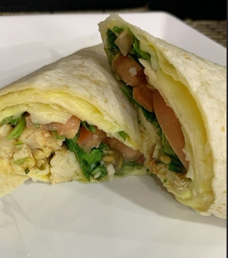
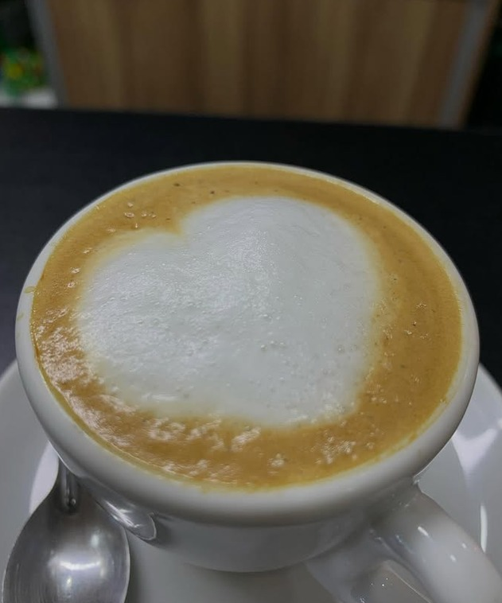
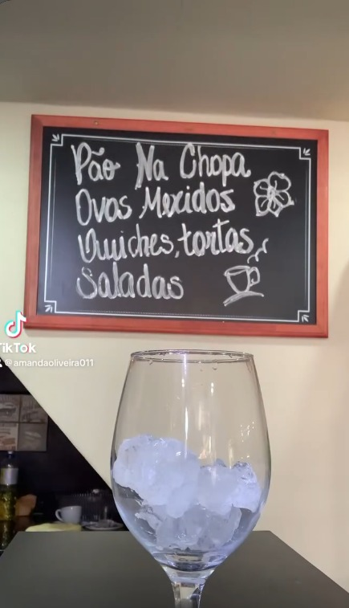

Bolos
Uma fatia de aconchego, com aquele jeitinho caseiro que combina com qualquer hora.
Uma pausa gostosa no seu dia, com café quentinho, bolos que dão água na boca e lanches preparados para você aproveitar cada mordida.
Descubra nossas delíciasNo Café da Eli, cada visita é um convite para desacelerar, saborear e querer voltar. Escolha sua delícia favorita!
Uma fatia de aconchego, com aquele jeitinho caseiro que combina com qualquer hora.

Opções caprichadas e saborosas para matar a fome e deixar o dia melhor.

Uma pausa especial com café quentinho e espuma cremosa. Seu momento merece!

Café da Eli
R. Dr. Assis Corrêa, 55 – Gonzaga
Santos – SP, 11055-310